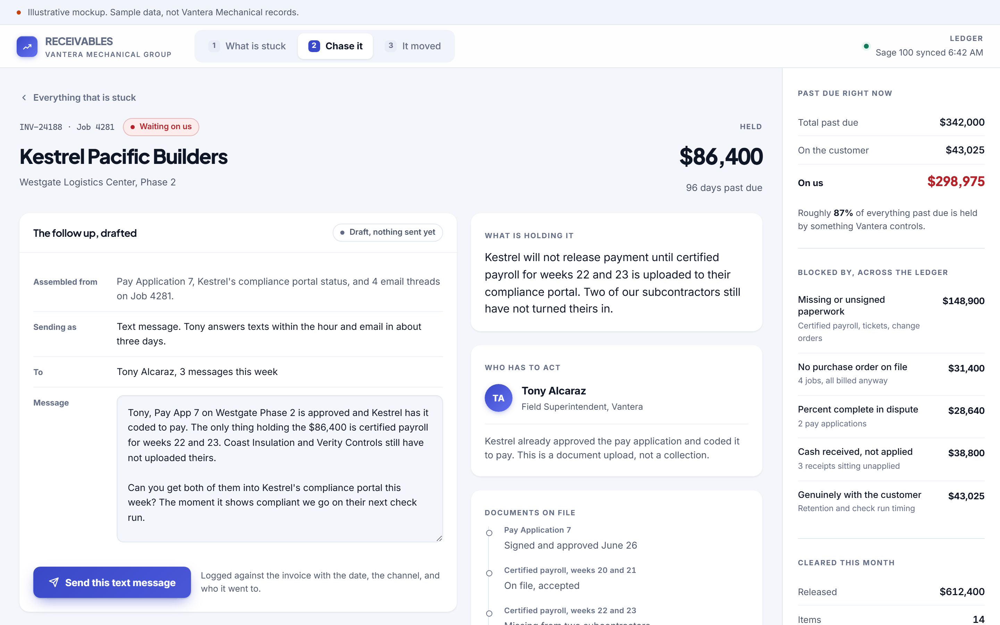
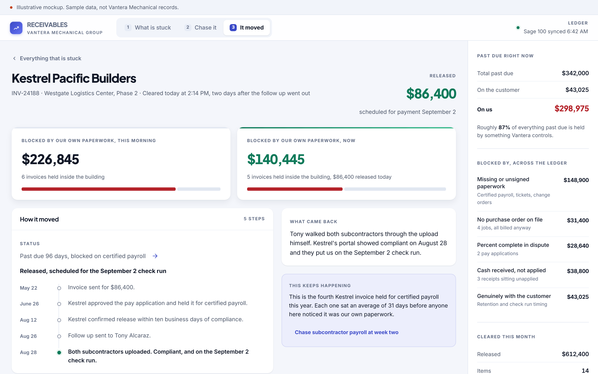
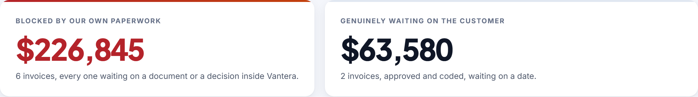
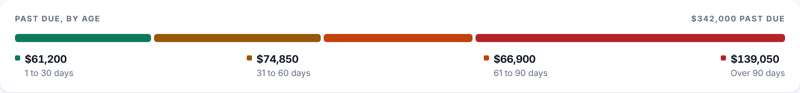
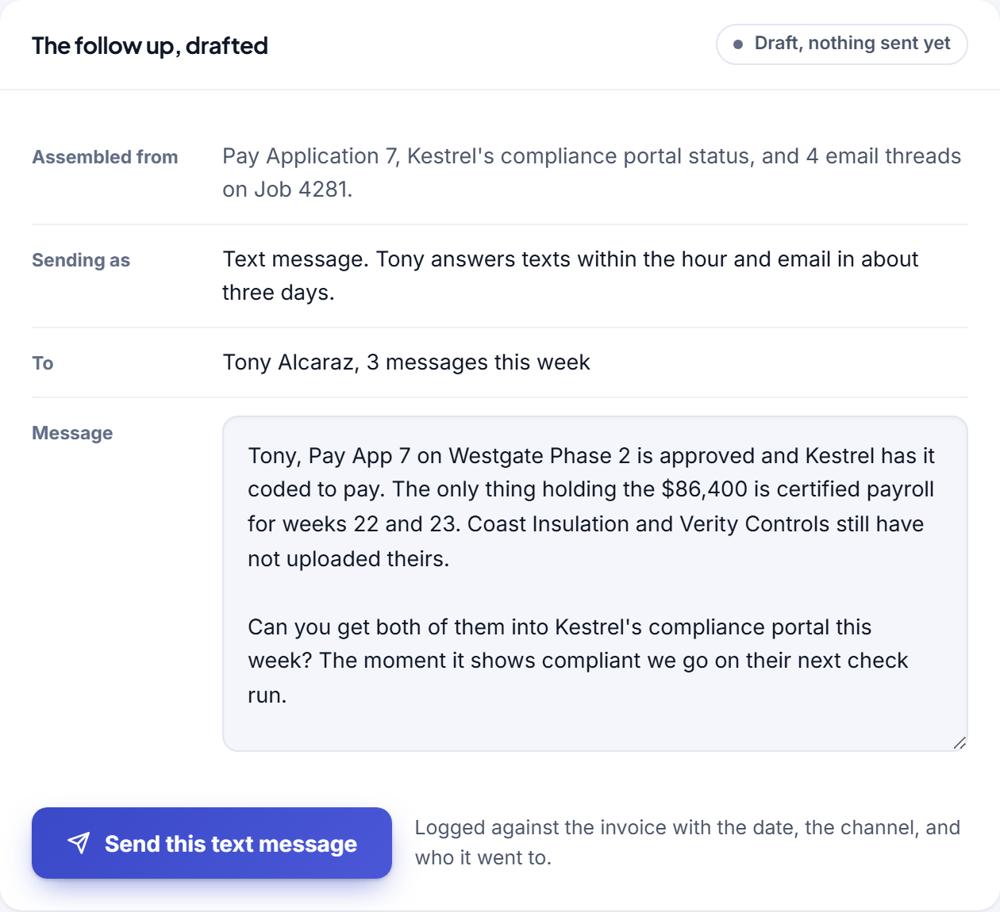

Concept, built to show the software behind a manual role. Not delivered client work.
The aged receivable is mostly our own paperwork.
Most of what sits past ninety days is not a customer refusing to pay. It is a document nobody inside the building has produced yet.
The role you would hire for
The role is collections on roughly three hundred open invoices, reconciling cash receipts, chasing pay applications through customer portals, and producing a weekly aging report for the controller. It runs across the accounting system, the project management system and a spreadsheet.
The manual process that implies
That job is a person with two screens and a phone. They read the aging report, decide which of sixteen past due invoices to work today, open the job folder to find out why each one is stuck, write the same email for the fourth time, and record what they did in a spreadsheet the controller reads on Monday. The part that never gets done is the part that matters most: separating the invoices a customer is holding from the invoices held by a missing certified payroll, an unsigned change order, or a receipt that landed in the bank and was never applied.
87%
of everything past due was held by the contractor's own paperwork, not by customers refusing to pay
Most aged receivable is blocked on the contractor's own paperwork, not on customers refusing to pay. Sort the queue by who owes the next move and the collections problem turns into a document problem.
Three screens
Built to be read in a screenshot, then clicked through by whoever it lands with.



Detail
The three places where this stops being a report and starts being a tool.



What it would take to build for real
The concept is a proposal about the shape of the work. This is the honest version of the rest.
What it reads
The accounting system for invoices, receipts and aging. The project management system for pay applications, change orders and job folders. Email threads for what has already been said. Nothing here needs a new source of truth, it needs the four existing ones read together.
What it writes
A logged contact against the invoice, an assignment to the person who owes the next move, and a rule that fires before the next invoice goes out. Everything else stays where the controller already looks for it.
What is genuinely hard
Classifying the blocker. Deciding that an invoice is held by a missing document rather than by a slow customer takes both systems and the email thread, and it is the difference between a report and a working screen. Expect to spend most of the build here.
Shape of the work
Four to six weeks. One designer and one engineer working directly with the person who runs the aging report. Roughly $12,000 to $18,000 depending on how many systems have to be read.
Every engagement is staffed with a dedicated team and a named project lead who works directly with the person who owns the process. The software above was built before anyone paid for anything, which is the point.